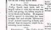
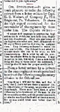
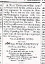
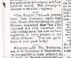
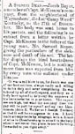
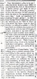
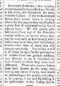

"No expense will be spared in obtaining the most prompt, full and reliable information..."
Valley Spirit, January 15, 1862

Letter from Col. Stumbaugh Valley Spirit, January 15, 1862
"He is loved by all his men..."Valley Spirit, January 22, 1862

"Rallying Song of the 77th Penna."Valley Spirit, January 22, 1862

"You can go in boys on your good looks!" Valley Spirit, January 22, 1862

"A Soldier Dead" Valley Spirit, January 22, 1862

"Look out somebody is cheating the poor soldier!" Valley Spirit, January 22, 1862

"Our readers...are clamourous for news of the camps." Valley Spirit, January 22, 1862

"Relief for the Soldiers" Valley Spirit, January 29, 1862
"Recruits Wanted" Valley Spirit, February 12, 1862


Letter from Pvt. Henry Erisman, Co. K
Near Camp Andy Johnson, March 12, 1862
 |
 |
 |
 |
 |
 |